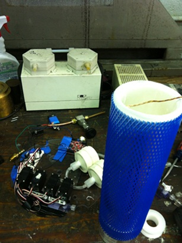
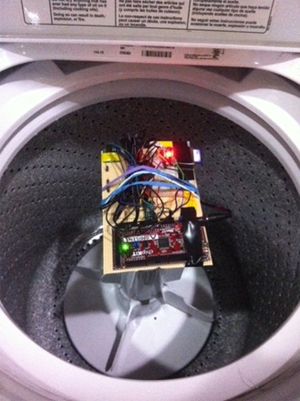
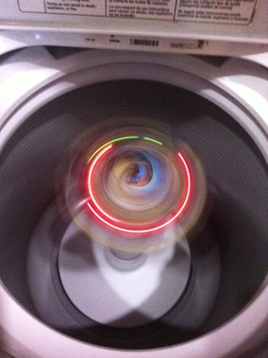
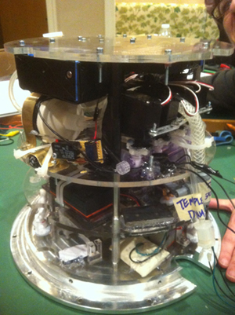
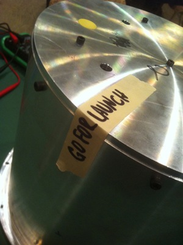
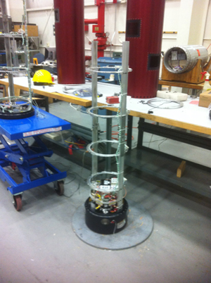
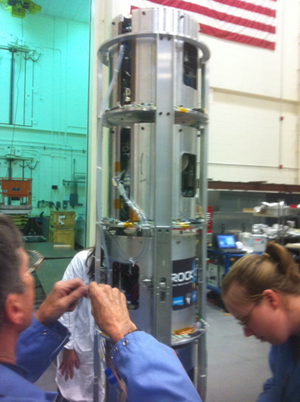

|
NASA RockSat-C: Near Space Biological Aquisition Unit
ABSTRACT:
Microbiology in the upper atmosphere, despite being relevant to climate studies,
health and agriculture, remains relatively unstudied. We propose to use a sounding rocket
payload as a biological acquisition unit in order to address issues of residency time,
types and concentration of microbes, and the mechanism by which microorganisms repair their
DNA from UV damage. To do this we will equip the payload with a spectrometer, which will
measure UV flux as a function of altitude, and a series of filters designed to capture
material suspended in the atmosphere between 6 and 120 km. We will also measure the earth’s
magnetic field strength and flight dynamics of the rocket. Since our team is composed of
both Electrical and Mechanical Engineers our design will be broken up in two parts. The
electrical component will consist of power supply, data processing and storage, and
implementation of the spectrometer, accelerometers, gyroscope, and magnetometer. The
mechanical component will consist of designing a mechanism to open and close the canister's
atmospheric port and filtration device at specific altitudes, mounting and securing all
devices inside the canister, and properly adjusting the moment of inertia and center of gravity.
Website: LINK
TESTING:

Figure: Liquid Nitrogen Dewar used to see if our payload could withstand the extreme cold
 
Figure: Spin Test to see if our electronics (gyroscopes) were properly calibrated. Not much testing equipment was available at Temple, so we used a washing machine.
ROCKET INTEGRATION AT WALLOPS FLIGHT FACILITY:
 
Figure: Combined payload with Drexel University and sealed payload ready for launch.
 
Figure: Rocket loaded with payloads
SD CARD CODE:
FILTRATION SYSTEM CODE:
|